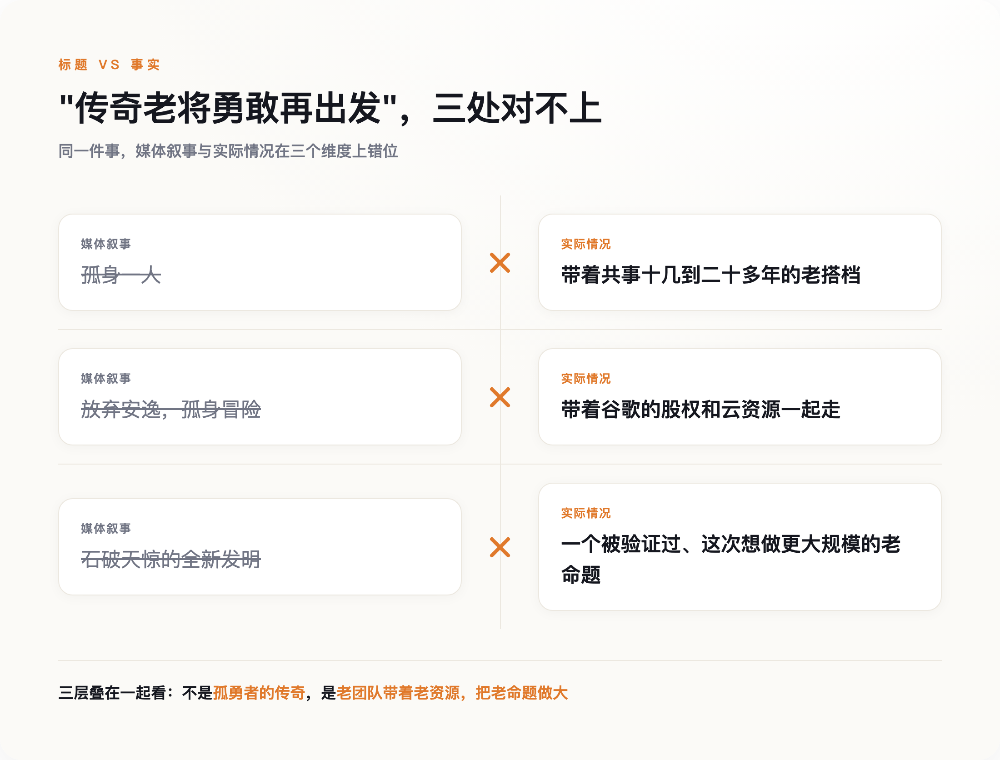

导语
程序员圈子里流传过一堆关于他的段子："编译器不敢警告Jeff Dean的代码，只会向它道歉"；他休假几天，谷歌的生产系统就会莫名其妙开始抽风；他在斯坦福办公室太挤，高德纳都得坐地上听他讲课。这些"Jeff Dean 神迹"在程序员社区流传了将近二十年，把他塑造成一个人能顶一整个团队的孤胆英雄。8月5日，这位在谷歌干了27年的首席科学家宣布离职创业，媒体标题清一色是"传奇再出发"。但这次创业最有意思的部分，不是一个孤胆英雄单枪匹马杀回战场，是他把当年一起打天下的老搭档，原封不动地又叫回了同一张桌子。
一、互联网封神，但他自己不认
"Jeff Dean Facts"这套玩笑大约始于2007年前后，灵感来自当年流行的"查克·诺里斯梗"——网友把这套"无所不能"的夸张句式，套在了这位谷歌工程师身上。GitHub上至今还留着专门收集这些段子的仓库，条目五花八门：他证明了P=NP、他用一句printf就实现了一整个网页服务器、他的PIN码是圆周率的最后四位。这套玩笑之所以能流传近二十年，底层原因是真实的：他确实参与设计了谷歌内部几乎所有关键的底层系统。
但Jeff Dean本人对这套封神叙事的反应，据Slate杂志的报道，是有点不好意思，还反复强调一件事：他这些年做出的东西，几乎全部是团队协作的产物，不是他一个人的超能力。这句谦虚的话，当时听起来像是标准的谦辞，直到这次创业的团队名单公布，才显出它的分量。
二、这不是单枪匹马，是老搭档原班人马归队
Discovery Loop的联合创始人名单里，有一个名字懂行的人一看就明白分量：Sanjay Ghemawat。二十多年前，正是他和Jeff Dean一起写出了那篇后来催生整个大数据行业的MapReduce论文——那套"分布式并行计算"的思路，直接孕育了Hadoop生态，进而影响了后来几乎所有大规模数据处理系统的设计方式。没有那篇论文，今天"大数据"这三个字可能都不会长成现在这个样子。这次创业，还有Google Brain创始成员之一的Quoc Le，以及前DeepMind研究VP、和Dean等人共同负责过Gemini模型技术的Oriol Vinyals。四个人共事的年头，短则十四年，长则二十多年。
互联网喜欢把技术突破讲成孤胆英雄的传奇，仿佛某个人脑子里灵光一闪就能改变世界。但Jeff Dean真正的履历讲的是另一个故事：他最重要的成就，从MapReduce到Bigtable，从来都是和同一小撮人反复搭档打出来的，不是一个人的独角戏。这次创业，不过是同一支多年配合无间的老队伍，换了个战场，继续打第N场配合。
三、也不完全是"勇敢出走"，谷歌自己也留了一手
"传奇老将辞职创业"这个说法，还漏掉了一层更值得琢磨的事实。Discovery Loop这轮融资的领投方是Radical Ventures和Khosla Ventures，但参投名单里也写着谷歌——谷歌是若干参投方之一，还承诺至少在第一年为这家新公司提供云计算资源。这不完全是一个人放弃安逸、孤身冒险去创业公司车库里从零开始的故事，是Jeff Dean带着老搭档走出了公司大门，而谷歌选择继续用真金白银和云资源，跟这支队伍绑在一起。
巧的是，同一天，谷歌DeepMind的掌门人戴密斯·哈萨比斯也卸任了CEO——但这是完全不同性质的另一件事：哈萨比斯转任董事长，同时新增了"Alphabet首席科学家"的头衔，人还在公司体系里，继续管着旗下的药物研发子公司Isomorphic Labs。他是主动从管理岗退回科学家岗位，不是离开；Dean才是真正意义上走出了这栋大楼的人。两件事撞在同一天，容易被媒体渲染成谷歌AI部门"地震"，但性质完全不同，不该被混为一谈。
风险投资研究机构PitchBook的分析师Brendan Burke说过一句挺扎心的话，形容的是这类由大厂研究领袖创立的公司：他们本质上是想在一个自己能说了算的外部实体里，复刻当年在大厂内部享受过的、资金充裕的研究条件。这句话不是针对Discovery Loop说的，但拿过来对照几乎严丝合缝——名义上是离职创业，实际上更像是把大厂的资源关系，换了一种对自己更有利的股权结构重新谈了一遍。谷歌一边是这家新公司的股东和云供应商，一边又刚刚放走了自己的首席科学家，这种商业身份上的双重下注，比"传奇再出发"这种说法诚实得多，也有意思得多。
四、他们真要做的事，到底新不新
抛开身份和资本结构，Discovery Loop声称要做的事情本身，确实野心不小：用大模型和大规模算力，同时发起和迭代成千上万个科学实验，把"自动化科学研究"这件事做到一个此前没人达到过的规模。但"用AI自动化科学方法"这个想法本身并不新——早在2009年前后，英国就有过"机器人科学家"项目Adam和Eve，Adam能自主提出并验证酵母功能基因组学的假设；DeepMind的GNoME项目用图神经网络预测了220万种新晶体结构，还和伯克利实验室的自动化机器人实验室联手，17天里自主合成了41种新材料；2024年，Sakana AI发布过一个号称能自动"提出想法、写代码、跑实验、写论文"全流程的"AI科学家"，单篇论文成本不到15美元，但学界后续的独立评测给出的结论是"大胆宣称，结果参差"。
Discovery Loop目前唯一拿得出手的"新意"主张是规模——不是验证一个假设，是同时铺开成千上万个实验。但这个说法目前只停留在创始团队自己的公开表态里，还没有任何独立第三方评估过它的真实能力，公司刚成立，这也是意料之中的事。这次创业到底是把"自动化科学"这件事真正推上了新台阶，还是又一次"老概念、新包装"，现在下结论都还早。
五、真正值得记住的，不是这次创业有多励志

把这几层放在一起看，"传奇老将勇敢再出发"这个说法，几乎每个词都需要打个问号：他不是孤身一人，是带着共事几十年的老队友；他不是干净利落地放弃安逸去冒险，是带着谷歌的股权和云资源一起走的；他要做的事，也不是石破天惊的全新发明，是一个已经有人尝试过、这次想做到更大规模的老命题。
但这些问号打下去之后，剩下的东西反而更值得记住：一个被互联网封神封了近二十年的"孤胆英雄"，真正在意的，始终是那几个老搭档还愿不愿意再和他坐到同一张桌子前。这比任何一句"励志再出发"的通稿标题，都更接近这件事本身的分量。